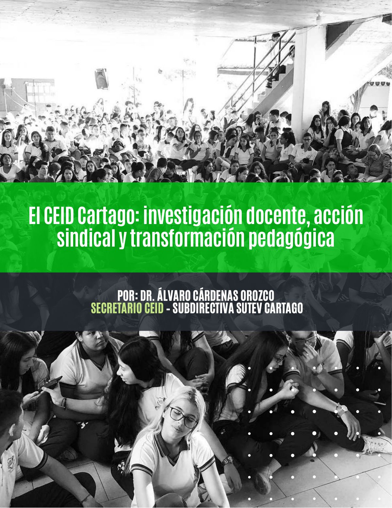
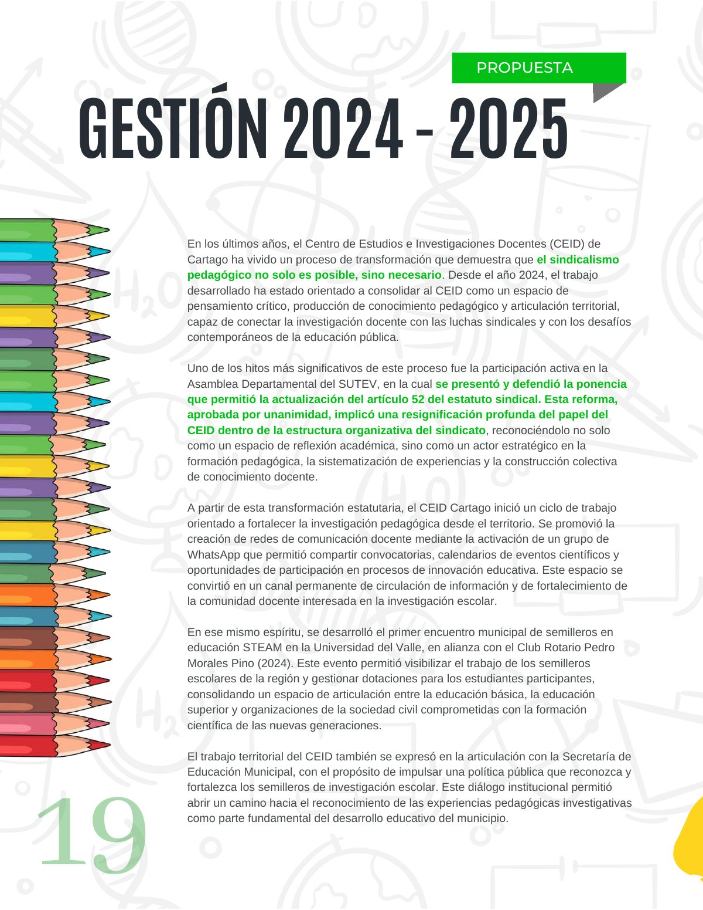
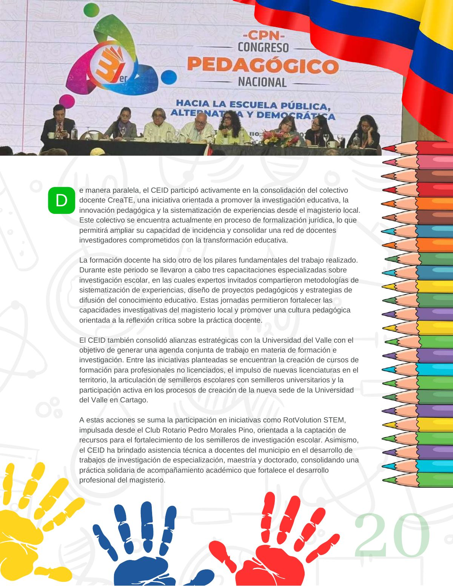
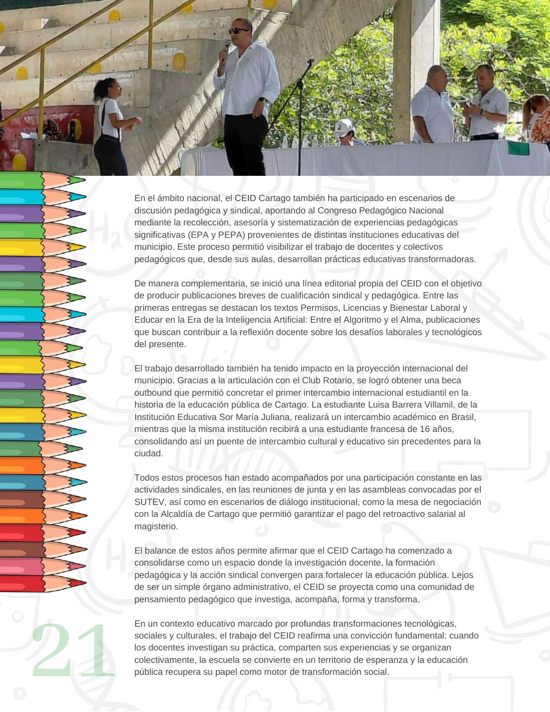

El CEID Cartago: investigación docente, acción sindical y transformación pedagógica
La gestión del CEID Cartago: investigación docente, acción sindical y transformación pedagógica, explicada a los afiliados.
PDF · 4 págs. · 758 KBGestión 2024 - 2025
En los últimos años, el Centro de Estudios e Investigaciones Docentes (CEID) de Cartago ha vivido un proceso de transformación que demuestra que el sindicalismo pedagógico no solo es posible, sino necesario. Desde el año 2024, el trabajo desarrollado ha estado orientado a consolidar al CEID como un espacio de pensamiento crítico, producción de conocimiento pedagógico y articulación territorial, capaz de conectar la investigación docente con las luchas sindicales y con los desafíos contemporáneos de la educación pública.
Uno de los hitos más significativos de este proceso fue la participación activa en la Asamblea Departamental del SUTEV, en la cual se presentó y defendió la ponencia que permitió la actualización del artículo 52 del estatuto sindical. Esta reforma, aprobada por unanimidad, implicó una resignificación profunda del papel del CEID dentro de la estructura organizativa del sindicato, reconociéndolo no solo como un espacio de reflexión académica, sino como un actor estratégico en la formación pedagógica, la sistematización de experiencias y la construcción colectiva de conocimiento docente.
A partir de esta transformación estatutaria, el CEID Cartago inició un ciclo de trabajo orientado a fortalecer la investigación pedagógica desde el territorio. Se promovió la creación de redes de comunicación docente mediante la activación de un grupo de WhatsApp que permitió compartir convocatorias, calendarios de eventos científicos y oportunidades de participación en procesos de innovación educativa. Este espacio se convirtió en un canal permanente de circulación de información y de fortalecimiento de la comunidad docente interesada en la investigación escolar.
En ese mismo espíritu, se desarrolló el primer encuentro municipal de semilleros en educación STEAM en la Universidad del Valle, en alianza con el Club Rotario Pedro Morales Pino (2024). Este evento permitió visibilizar el trabajo de los semilleros escolares de la región y gestionar dotaciones para los estudiantes participantes, consolidando un espacio de articulación entre la educación básica, la educación superior y organizaciones de la sociedad civil comprometidas con la formación científica de las nuevas generaciones.
El trabajo territorial del CEID también se expresó en la articulación con la Secretaría de Educación Municipal, con el propósito de impulsar una política pública que reconozca y fortalezca los semilleros de investigación escolar. Este diálogo institucional permitió abrir un camino hacia el reconocimiento de las experiencias pedagógicas investigativas como parte fundamental del desarrollo educativo del municipio.
De manera paralela, el CEID participó activamente en la consolidación del colectivo docente CreaTE, una iniciativa orientada a promover la investigación educativa, la innovación pedagógica y la sistematización de experiencias desde el magisterio local. Este colectivo se encuentra actualmente en proceso de formalización jurídica, lo que permitirá ampliar su capacidad de incidencia y consolidar una red de docentes investigadores comprometidos con la transformación educativa.
La formación docente ha sido otro de los pilares fundamentales del trabajo realizado. Durante este periodo se llevaron a cabo tres capacitaciones especializadas sobre investigación escolar, en las cuales expertos invitados compartieron metodologías de sistematización de experiencias, diseño de proyectos pedagógicos y estrategias de difusión del conocimiento educativo. Estas jornadas permitieron fortalecer las capacidades investigativas del magisterio local y promover una cultura pedagógica orientada a la reflexión crítica sobre la práctica docente.
El CEID también consolidó alianzas estratégicas con la Universidad del Valle con el objetivo de generar una agenda conjunta de trabajo en materia de formación e investigación. Entre las iniciativas planteadas se encuentran la creación de cursos de formación para profesionales no licenciados, el impulso de nuevas licenciaturas en el territorio, la articulación de semilleros escolares con semilleros universitarios y la participación activa en los procesos de creación de la nueva sede de la Universidad del Valle en Cartago.
A estas acciones se suma la participación en iniciativas como RotVolution STEM, impulsada desde el Club Rotario Pedro Morales Pino, orientada a la captación de recursos para el fortalecimiento de los semilleros de investigación escolar. Asimismo, el CEID ha brindado asistencia técnica a docentes del municipio en el desarrollo de trabajos de investigación de especialización, maestría y doctorado, consolidando una práctica solidaria de acompañamiento académico que fortalece el desarrollo profesional del magisterio.
En el ámbito nacional, el CEID Cartago también ha participado en escenarios de discusión pedagógica y sindical, aportando al Congreso Pedagógico Nacional mediante la recolección, asesoría y sistematización de experiencias pedagógicas significativas (EPA y PEPA) provenientes de distintas instituciones educativas del municipio. Este proceso permitió visibilizar el trabajo de docentes y colectivos pedagógicos que, desde sus aulas, desarrollan prácticas educativas transformadoras.
De manera complementaria, se inició una línea editorial propia del CEID con el objetivo de producir publicaciones breves de cualificación sindical y pedagógica. Entre las primeras entregas se destacan los textos Permisos, Licencias y Bienestar Laboral y Educar en la Era de la Inteligencia Artificial: Entre el Algoritmo y el Alma, publicaciones que buscan contribuir a la reflexión docente sobre los desafíos laborales y tecnológicos del presente.
El trabajo desarrollado también ha tenido impacto en la proyección internacional del municipio. Gracias a la articulación con el Club Rotario, se logró obtener una beca outbound que permitió concretar el primer intercambio internacional estudiantil en la historia de la educación pública de Cartago. La estudiante Luisa Barrera Villamil, de la Institución Educativa Sor María Juliana, realizará un intercambio académico en Brasil, mientras que la misma institución recibirá a una estudiante francesa de 16 años, consolidando así un puente de intercambio cultural y educativo sin precedentes para la ciudad.
Todos estos procesos han estado acompañados por una participación constante en las actividades sindicales, en las reuniones de junta y en las asambleas convocadas por el SUTEV, así como en escenarios de diálogo institucional, como la mesa de negociación con la Alcaldía de Cartago que permitió garantizar el pago del retroactivo salarial al magisterio.
El balance de estos años permite afirmar que el CEID Cartago ha comenzado a consolidarse como un espacio donde la investigación docente, la formación pedagógica y la acción sindical convergen para fortalecer la educación pública. Lejos de ser un simple órgano administrativo, el CEID se proyecta como una comunidad de pensamiento pedagógico que investiga, acompaña, forma y transforma.
En un contexto educativo marcado por profundas transformaciones tecnológicas, sociales y culturales, el trabajo del CEID reafirma una convicción fundamental: cuando los docentes investigan su práctica, comparten sus experiencias y se organizan colectivamente, la escuela se convierte en un territorio de esperanza y la educación pública recupera su papel como motor de transformación social.
Así se ve en la revista
4 páginas


